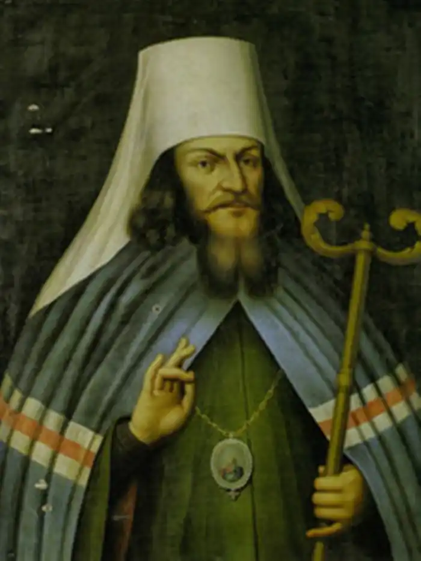
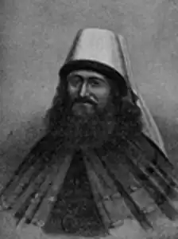

Яворський Стефан
(1658-1722)
письменник, філософ, церковний діяч Стефан Яворський (в миру — Семен Іванович Яворський) народився в містечку Яворі біля Турки (тепер Львівська область) у сім’ї дрібномаєтного шляхтича, можливо, родом з Наддніпрянської України, бо пізніше родина Яворських оселяється у селі Красилівці неподалік Ніжина. Початкову освіту Семен Яворський здобув, ймовірно, у братській школі в Турці або в Яворі. Вже в той час він отримав добру освіту, знання латинської та давньогрецької мов, умів писати вірші латиною. 1673 року Яворський вступає в Києво-Могилянський колегіум. У колегіумі мав добрі успіхи з усіх дисциплін, завоював прихильність ректора — Варлаама Ясинського, пізніше митрополита Київського і Галицького. Високо шануючи свого покровителя, Яворський складає йому панегірики латинською мовою. Вирішивши удосконалити освіту, Яворський з благословення Варлаама Ясинського їде до Львова, де вступає до Львів-ського єзуїтського колегіуму, перед цим прийнявши уніатство. Провчившись рік у Львові, удосконалює освіту в колегіумах Любліна, Познані, Вільно, в яких бере участь у філософських диспутах, вивчає філософські курси відомих у той час професорів філософії Яна Моравського та Яна Млодзяновського, складає власний курс філософії. У Вільно Яворського за великі успіхи в науці призначають на посаду керівника "Конгрегації пресвятої Діви". Яворський прийняв чернецтво під іменем Станіслава, але невдовзі, виступивши з критикою окремих положень католицизму, викликає цим невдоволення святих отців, залишає Вільно й повертається до Києва, де 1698 року зрікається уніатства і складає іспити перед духовною владою та професорами Колегіуму на магістра вільних мистецтв, філософії і теології. З того року викладає у класі поетики, пише вірші та складає орації. Згодом укладає власний курс філософії. Стає популярним у Києві оратором і поетом, знайомиться з гетьманом Іваном Мазепою, складає панегірик його родичу полковникові Івану Обидовському. Пише курс психології, використавши новітні досягнення європейських учених у цій галузі. Яворський в роки викладання написав також твори з догматики "Про святу Трійцю" та "Про церкву". Під час одного з візитів до Москви Яворський виголошує блискучу промову на похоронах боярина Шеїна, яка сподобалася Петрові I і молодого київського ієромонаха 1700 року залишають у Москві. Згодом стає протектором Московської слов’яно-греко-латинської академії, в якій він реформував навчальний процес на зразок Київського колегіуму, засновує при академії театр і керує ним. Пізніше згуртовує навколо себе однодумців, здебільшого вихідців з Києва, бере активну участь у реформах Петра I, багато сил віддає видавничій діяльності як фаховий рецензент, редактор багатьох наукових видань, що виходили у Московській друкарні. 1700 року Яворського висвячено на митрополита Рязанського та Муромського. 1702 року він стає екзархом та місцеблюстителем всеросійського патріаршого престолу. В той час починаються його суперечки й незгоди з Феофаном Прокоповичем. 1715 року закінчив головну свою полемічну працю "Камінь віри". 1721 року Яворського призначено главою Священного Синоду Російської православної церкви, але, вже тяжко хворий, він майже не брав участі в його роботі, фактично керував Синодом віце-президент Феофан Прокопович. Помер Стефан Яворський 24 листопада 1722 року. Поховано його у Переяславі-Рязанському, у Донському монастирі, під церквою Стрітення. Стефан Яворський був одним з найосвіченіших діячів свого часу, автором цілого ряду глибоких літературних, філософських і теологічних праць, що відіграли помітну роль в культурно-освітньому житті України кінця XVII століття. Стефан Яворський як викладач Києво-Могилянського колегіуму, поет і оратор був дуже популярний в освічених колах київської еліти. Його вірші цитували викладачі на лекціях, зокрема, Феофан Прокопович, майбутній суперник у Москві, цитував вірш "Богородице Діво, що вдягнена в сонце". Згадує його й Митрофан Довгалевський у своїй книзі "Сад поетичний". Стефан Яворський вільно володів і писав трьома мовами — латинською, польською та книжною українською. Знав грецьку та старослов’янську. Багато київських зверхників вважали за честь мати від Яворського панегірик. Він пише панегірики полковникові Івану Обидовському, родичеві всемогутнього гетьмана Мазепи. !684 року Яворський створює блискучий панегірик митрополитові Варлаамові Ясинському "Геракл після Атланта", в якому засвідчує свій великий поетичний хист. Яворський був чудовий оратор, і в умінні складати так звані орації з ним не міг ніхто зрівнятися. Як яскравий представник барокової літератури в Україні, використовував бароковий стиль з його динамічністю, яскравою театральністю, складною метафоричністю, у своєму лекційному курсі з філософії, зокрема у вступі до цього курсу, що має пишну назву: "Філософське змагання, що розпочинається на арені православної Києво-Могилянської гімназії руськими атлетами для більшості слави того, котрий, будучи вільним від гріха пілігримом єдинородним Сином Отця, вступив на шлях помноження слави найблаженнішої Його Матері, яка пройшлась колись швидко Юдейськими узгір’ями". Яворський відкривав свій курс у найкращих традиціях українського бароко: "Я відкриваю для вас, о найстаранніші атлети, не так олімпійські ігри, як лабіринт Арістотеля, що переважає лабіринт Дедала. Тут що не питання, то пастка, яка очікує вас на відкритих шляхах..." Стефан Яворський розумів, що філософію можна осягти лише у поєднанні з іншими суміжними науками, зокрема з логікою, і тому розробив свій курс цієї науки, оскільки вважав, що її можливості є гарантом подолання всіх труднощів філософії. Логіка давала Яворському можливість будувати правильні визначення, без яких не могла йти мова про точність і однозначність вживаних філософських термінів. "Метою нашої пізнавальної потенції є пізнання та встановлення істини, — писав Яворський. — Але оскільки людський розум сам по собі є слабкий та ненадійний і може, звичайно, хитатися між істинним і хибним, то потребує якоїсь наукової навички, яка у змозі керувати діями нашого розуму". Стефан Яворський та інші викладачі колегіуму виступали проти неправильного розуміння значення логіки представниками православної ортодоксії, які вважали цю науку не тільки непотрібною, а й шкідливою. Ця традиція заперечення логіки йшла ще від Івана Вишенського, який піддавав анафемі учителів філософії у братських школах. Стефан Яворський наважується заперечити думки цього та інших отців церкви, вважаючи, що наука немислима без логіки, яка дає можливість досягти точності і однозначності наукових термінів, переконливо обгрунтувати ті чи інші положення. "Нам закидають, — писав він,— що отці церкви засуджували логіку, отже морально вона не є потрібною. Я відповідаю: вони засуджували не логіку, а зловживання логікою, яке було тоді, коли віра атакувалася логікою, наприклад Августином і маніхейцями; так що латиняни у своїх літаніях повинні були співати: "Звільни нас Боже від логіки Августина". Стефан Яворський блискуче читав курс натурфілософії, грунтуючи свої висновки на працях Арістотеля, Птоломея, Коперника. Хоч його теорія будувалася головним чином на спостереженні, а не на експерименті, як пізніше у Феофана Прокоповича, проте Яворський намагався пояснити явища природи, виходячи з неї самої і вірячи в силу людського розуму, в можливості його не тільки пізнавати "дивні явища", а й створювати їх для власного добра. Тобто Яворський закликав до дальшого дослідження природи і використання досягнень науки в житті. Найбільш цікавим у київському колегіумі був курс Яворського з психології, в якому вчений спирався на вчення Арістотеля "Про душу" та інші його твори. Душу Яворський розглядав як форму органічного тіла, яка має життя в потенції. Він вирізняв три її види: вегетативна душа — для рослин; відчуттєва — для тварин; розумна — для людини. С.Яворський дає поняття анатомо-фізіологічної властивості людини, стверджуючи, що всі її життєві функції зумовлені "життєвими духами", які виробляються з серця і крові. Життя людини вчений ділить на три періоди: дитинство, юність, старість, а також на семирічні цикли, під час яких є критичні й небезпечні моменти для життя людини. Яворський вважав, що життя людське надто коротке, але його можна продовжити, вгамовуючи свої пристрасті, зберігаючи помірність у харчуванні, не займаючись надмірною працею, а вести життя здорове, на гарній місцевості. Тобто Яворський пропагував засади геронтології в тих межах, які тоді були можливі. Але насамперед він закликав до духовного життя, до знань, які зроблять життя повнокровним і щасливим. З цього погляду вельми цікавий вірш Яворського "Прощання з книгами". Це чудовий взірець барокової поезії і водночас глибокодумний філософський трактат, вирішений у блискучій поетичній формі. Це немов життєве кредо філософа-поета, яке може стати взірцем і нині сущим любомудрам: В путь вирушайте, книжки, що часто гортав я і пестив, В путь, моє сяйво, ідіть! Втіхо й окрасо моя! Іншим, щасливішим, душам поживою будьте однині, Інші, блаженні, серця нектаром вашим поїть! Горе мені: мої очі розлучаються з вами навіки Та й не спроможуться вже душу мою наситить. Ви-бо єдині були мені нектаром, медом поживним; З вами на світі, книжки, солодко жити було. /**(Переклад Миколи Зерова).**/ ** Стефан Яворський був одним із найвідоміших ревнителів православ’я. Сміливий, благородний і відвертий. Він говорив правду самому Петру Великому, оточеному протестантами. Це не заважало, одначе, монарху поважати святителя; зате лютеранці дивилися на нього як на непримиренного й небезпечного ворога. І не вони одні, але й усі вороги церкви православної боялися сильних, прямих і непереможних його звинувачень. Твори Стефана Яворського служать живим свідченням енергійної боротьби його з противниками віри істинної. /**В.Аскоченський. 1856.**/ ** Цілком можливо, що і реформи загального і церковного характеру, задумані і проведені Петром, підпирав Прокопович не тільки з власного бажання, але з особистого переконання. Все-таки головними пружинами його діяльності було — персональне четолюбство і кар’єризм. Як вигідно відрізнявся від нього в цім відношенню Стефан Яворський, який не побоявся стати в опозицію цареві, коли прийшлося захищати права церкви. /**Б.Крупницький. 1935.**/